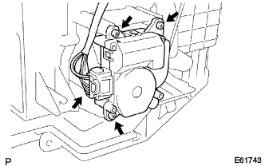
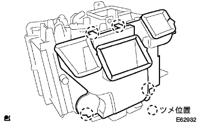

Cut the connector.
 |
Remove the three screws and remove the Air Mitsukus Dampa servo.
Hita Radiator degradation |
| 1. Air Mix Dampa servo SUB-ASSY removes (A / C auto) |
Cut the connector.
|
Remove the three screws and remove the Air Mitsukus Dampa servo.
| 2. Mode Dampa servo SUB-ASSY removal (A / C auto) |
|  |
Cut the connector.
Remove the three screws and remove the mode Dampa servo.
| 3. Remove the air duct |
|  |
Remove the four places of claws and remove the air duct.
| 4. Remove the heater cover |
 |
Remove the two places of screws and claws and remove the heater cover.
| 5. Cooler wiring No.1 removed (cold district specification car) |
Cut the connector.
 |
Remove the two screws and remove the No. 1 cooler wiring.
| 6. Taking a thermista ASSY removed (cold district specification car+A/C manual, A/C auto) |
 |
Remove the claws and remove the clamp.
Remove the thermista asser from the radiator hita units.
| 7. Remove aspirator pipe (A / C auto) |